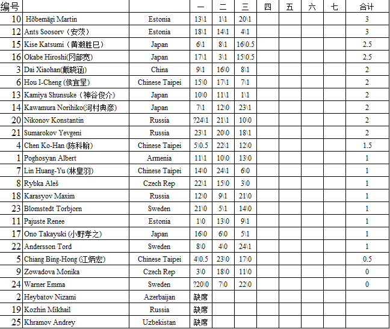

世锦赛QT截止第三轮积分情况（根据直播统计）
#1 世锦赛QT截止第三轮积分情况（根据直播统计） 作者：卯寻月 发表时间：2011-8-2 18:32:52
［此帖子已被 卯寻月 在 2011-8-2 18:38:24 编辑过］
［此帖子已被 卯寻月 在 2011-8-2 18:43:19 编辑过］
［此帖子已被 卯寻月 在 2011-8-2 18:45:04 编辑过］
［此帖子已被 卯寻月 在 2011-8-2 18:45:52 编辑过］
［ 白衣神童小剑魔 于 2011-8-2 18:58:44 时花20金币送鲜花一朵］
［ 微微一笑 于 2011-8-2 19:04:40 时花20金币送鲜花一朵］
［ 蓝天蓝 于 2011-8-2 19:22:46 时花20金币送鲜花一朵］
［ 第五象限 于 2011-8-2 22:59:24 时花20金币送鲜花一朵］
#2 Re:世锦赛QT截止第三轮积分情况（根据直播统计） 作者：白衣神童小剑魔 发表时间：2011-8-2 18:33:54
图片打不开
#3 Re:世锦赛QT截止第三轮积分情况（根据直播统计） 作者：卯寻月 发表时间：2011-8-2 18:39:23
可以了不？
#4 Re:世锦赛QT截止第三轮积分情况（根据直播统计） 作者：掌棋宣传员 发表时间：2011-8-2 18:41:06
还是不行
［ 白衣神童小剑魔 于 2011-8-2 18:42:08 时花20金币送鲜花一朵］
#5 Re:世锦赛QT截止第三轮积分情况（根据直播统计） 作者：珍惜你和我 发表时间：2011-8-2 18:42:33
图片，一个叉叉 重新发一次吧，大哥
重新发一次吧，大哥
#6 Re:世锦赛QT截止第三轮积分情况（根据直播统计） 作者：白衣神童小剑魔 发表时间：2011-8-2 18:44:10
还是不行，要像传棋谱那样传图片
#7 Re:世锦赛QT截止第三轮积分情况（根据直播统计） 作者：只为你而飞 发表时间：2011-8-2 18:51:39
可以打开了 （凑字数）#8 Re:世锦赛QT截止第三轮积分情况（根据直播统计） 作者：卯寻月 发表时间：2011-8-2 18:54:09
我是论坛菜鸟，大家多包含~~~
#9 Re:世锦赛QT截止第三轮积分情况（根据直播统计） 作者：灯塔连珠 发表时间：2011-8-2 19:07:50
第四轮北京时间几点开始呀
#10 Re:Re:世锦赛QT截止第三轮积分情况（根据直播统计） 作者：屏蔽 发表时间：2011-8-2 19:13:30
引用：
原文由 灯塔连珠 发表于 2011-8-2 19:07:50 :第四轮北京时间几点开始呀
七点
#11 Re:世锦赛QT截止第三轮积分情况（根据直播统计） 作者：怪 发表时间：2011-8-2 19:20:09
ants貌似对山月准备很充分。。